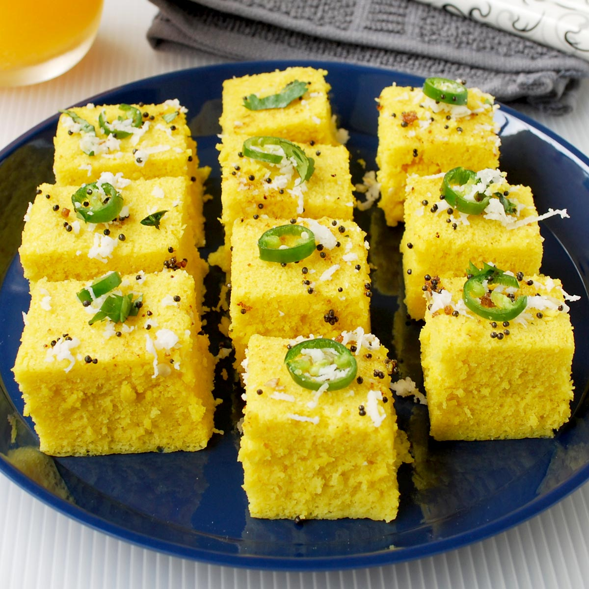

Ingredients

- 1 cup besan (gram flour)
- 1/2 cup water
- 1 tsp sugar
- 4 tbsp lemon juice
- Chili ginger paste
- 1 pinch hing (asafoetida)
- 1/4 tsp baking soda (preferably Eno fruit salt)
- Salt
Vaghar (tempering):
- Oil
- Til (sesame seeds)
- Rai (mustard seeds)
- Coconut
- Dhania (coriander)
Instructions
- Add salt and chili ginger paste to besan; also add hing.
- Dissolve sugar in 1/2 cup water.
- When sugar dissolves, add that water to besan and add lemon juice.
- Mix in 1 direction until it becomes smooth.
- When water boils in cooker, add baking soda to besan, put it in thali (metal plate), and heat without the whistle for 8 mins.
- Cut into pieces and put the vaghar (tempering) on top.
- Mix well and serve hot.